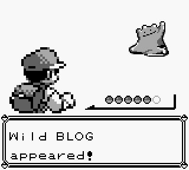

0x0000 - Wild Blog Appeared!
posted - 1111, 16MAY2016
edited - 1121, 16MAY2016

Hello there, and welcome to my blog! If you'd like to know more about myself
and what type of content to expect here, see the "me"
link. The tl;dr is that you can expect to read about all things nerdy.
If that doesn't sound like your particular brand of vodka, help yourself to as
much content as you like and have a safe journey-
no hard feelings.
Otherwise, keep reading.
This blog is handwritten in HTML/CSS, and is
open source. Why
did I write my website in HTML from scratch? A few reasons. First of all, I'm
a sucker for clean code. Check out the source code of this webpage, it's quite
clean and minimal. It was also because this website is personal to me. It's
my very own webpage, and I wanted to build it from the ground up. I stole a
few design ideas from z3bra's Monochromatic
Blog, it's pretty awesome. If you're reading this and want to have your
very own website, this book
isn't a bad place to start.
I wrote the core of this blog about a month
ago, but had yet to make an inaugural post! So, here it is. Not really too much
to say... One meta thing of note is if 'blog posts' are the correct
format for the sort of content that I want to write. Gwern has some
interesting thoughts on
this matter on his very unique, personal website. I like his idea of things
being continually built, perpetual rough drafts. Therefore, I will continue to
post on my blog as I have things to post, but I will continue to edit them
perhaps far into the future. Well, that's all for now. I'm thinking about
creating a 2D MMORPG, because it's something I've always wanted to do. That's
something that'd be worth posting about... More to come.